There are six main components to a thematic theme: a background color (bg), a foreground color (fg), an accent color, a font specification, a sequential color palette, and a qualitative color palette. The background, foreground, and accent all default to 'auto', meaning they do their best to use information available at plotting time to determine the appropriate color. In addition, since sequential is constructed from these colors (by default), sequential also dynamically adjusts to the current plotting context. By default, font = NA, meaning use R’s current default font, but you can also set font = 'auto' for automatic fonts (as we’ll see later, accent and sequential also support NA as a way to opt-out of automatic their behavior). Finally, qualitative defaults to the (color-blind safe) Okabe-Ito color palette, and so will not dynamically adjust to the plotting context, but you can always supply your own palette by doing some like thematic_on(qualitative = RColorBrewer::brewer.pal(8, "Dark2"))
thematic provides a single entry point to the main colours and fonts of ggplot2, lattice, and base graphics. To start a (global) theme, give thematic_on() a background, foreground, and accent colour, as well as (optionally) a font_spec(). If a Google Font family is requested, thematic attempts to automatically download, cache, and register the font for use with showtext and ragg (learn more in Custom Fonts). That means, if you have an internet connection and either showtext or ragg installed, any Google Fonts “just work” for nearly any use case.
#library(thematic)
#thematic_on(
# bg = "#212121", fg = "#C8C8C8", accent = "#5CB09D",
# font = font_spec("Oxanium", scale = 1.25)
#)As you’ll see in the examples below, thematic uses these “main” colours to inform consistent defaults not only for the plot’s overall theme (e.g., plot/panel background, text colour, etc), but also for accented graphical markers (e.g., ggplot2 geom defaults), as well as sequential and qualitative colour scales (these scaling defaults can also be controlled via thematic_on()). thematic_on() works by modifying global state in a “permanent” way so that any future plots assume that state; so, best practice is to call thematic_off() when you’re done using thematic.
ggplot2
thematic works best with ggplot2 (partly thanks to ggplot2’s overall design). In a nutshell, thematic does the following:
- Sets a new “complete”
theme()default based onbg,fg, andfont. Since this theme is “complete”, you probably don’t want to mix it with other complete themes (e.g.,theme_bw()), but you can definitely override particular aspects withtheme(). - For each relevant
Geom, sets newGeom$default_aesdefaults (based onbg,fg,accent, andfont). Grayscale colours (e.g.,GeomPoint$default_aes$colour) are assigned a blend ofbgandfgwhereas non-grayscale colours (e.g.,GeomSmooth$default_aes$colour) are assigned theaccentcolour. - Defines a new
scale_[fill/colour]_continuous()default (based on thesequentialargument, which defaults to a gradient betweenbg,fg, andaccent). - Defines a new
scale_[fill/colour]_discrete()default (based on thequalitativeargument, which defaults to the colour-blind safe Okabe-Ito palette).
Here’s an example demonstrating (1) and (2):
library(ggplot2) ggplot(diamonds[sample(nrow(diamonds), 1000), ], aes(carat, price)) + geom_point(alpha = 0.2) + geom_smooth() + facet_wrap(~cut) + ggtitle("Diamond price by carat and cut") #> `geom_smooth()` using method = 'loess' and formula 'y ~ x'
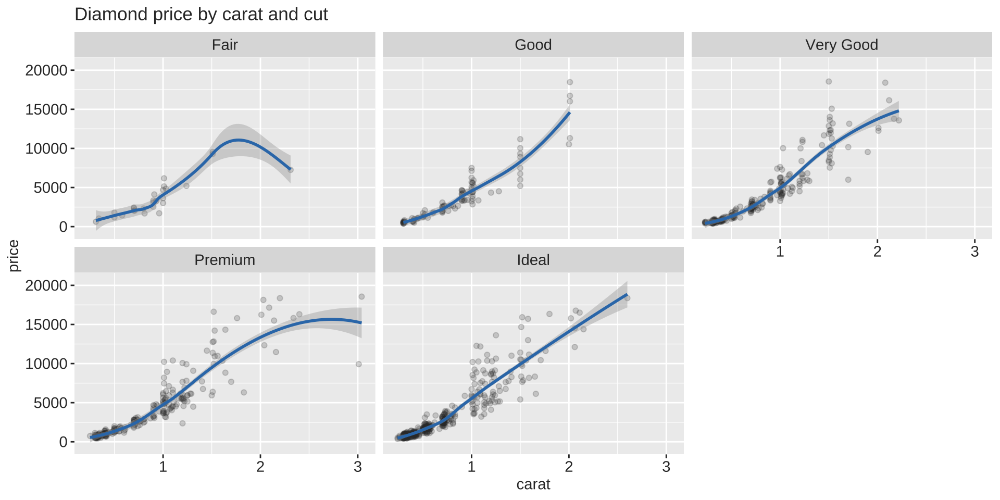
And an example demonstrating (1), (2), and (3):
ggplot(faithfuld, aes(waiting, eruptions, z = density)) + geom_raster(aes(fill = density)) + geom_contour() + ggtitle("Old faithful eruption vs waiting time")
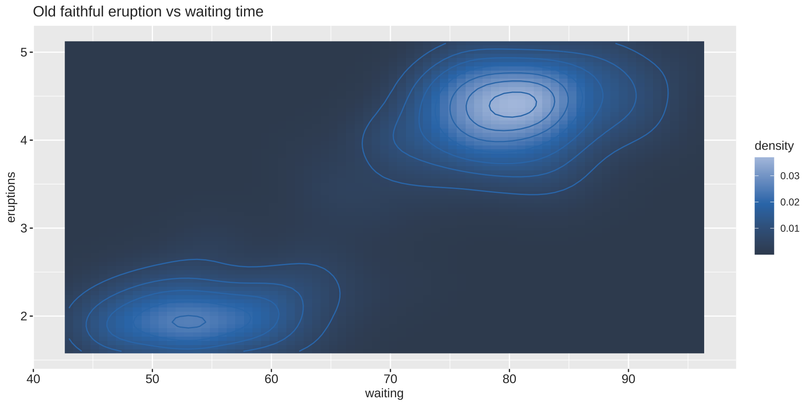
And an example demonstrating (1) and (4):
ggplot(economics_long) + geom_line(aes(date, value01, colour = variable)) + ggtitle("Economic indicators")
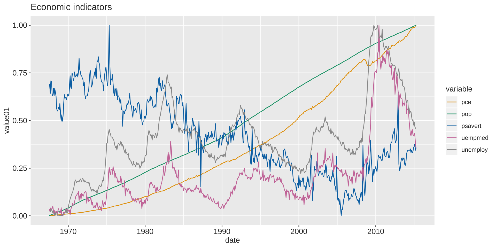
As for 3rd party ggplot2 extension packages, thematic should work as expected, as long as those extension packages aren’t setting their own defaults for (1)-(4).
library(GGally) ggpairs( iris, aes(colour = Species), upper = list(continuous = wrap(ggally_cor, displayGrid = FALSE, alignPercent = 0.9)) )
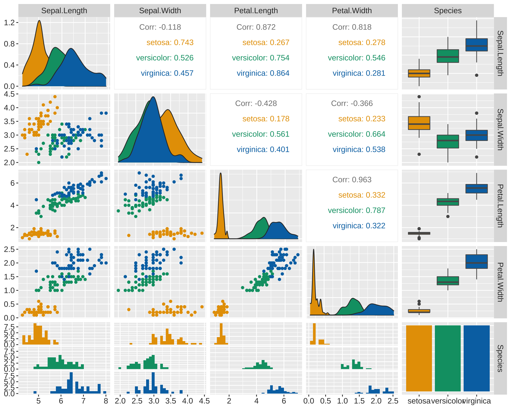
ggplot(mtcars, aes(wt, mpg, label = rownames(mtcars), colour = factor(cyl))) + geom_point() + ggrepel::geom_text_repel()

Lattice
thematic also works with lattice; however, beware that theming decisions are made so that lattice plots look somewhat similar to ggplot2. Also, similar to base graphics, lattice doesn’t have a global distinction between a qualitative and sequential colourscales, so sequential isn’t used in lattice. Instead, as with the true lattice default, the “regions” colourscale interpolate between qualitative[1], bg, and qualitative[2].
(Btw, for lattice, accent may be of length 2. The first is used for ‘stroke’ and the second for ‘fill’).
library(lattice) show.settings()
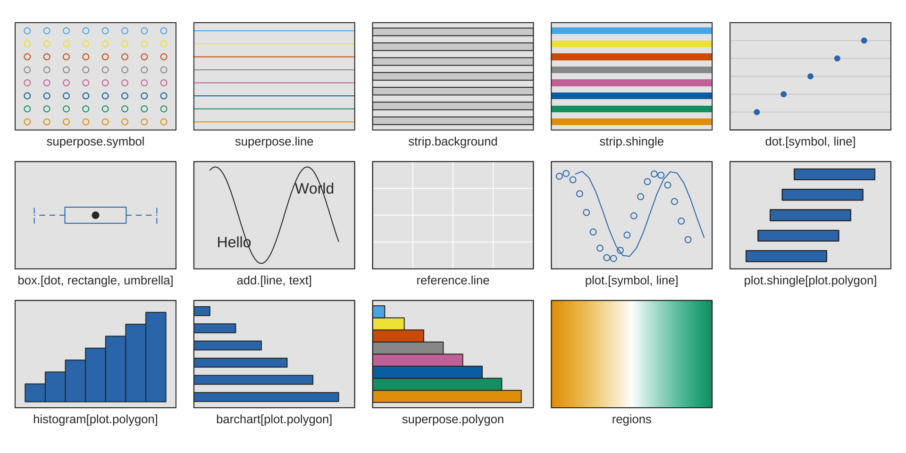
And here’s an real example (taken from ?lattice::levelplot) of where “regions” is relevant:
library(stats) attach(environmental) ozo.m <- loess((ozone^(1/3)) ~ wind * temperature * radiation, parametric = c("radiation", "wind"), span = 1, degree = 2) w.marginal <- seq(min(wind), max(wind), length.out = 50) t.marginal <- seq(min(temperature), max(temperature), length.out = 50) r.marginal <- seq(min(radiation), max(radiation), length.out = 4) wtr.marginal <- list(wind = w.marginal, temperature = t.marginal, radiation = r.marginal) grid <- expand.grid(wtr.marginal) grid[, "fit"] <- c(predict(ozo.m, grid)) contourplot(fit ~ wind * temperature | radiation, data = grid, cuts = 10, region = TRUE, xlab = "Wind Speed (mph)", ylab = "Temperature (F)", main = "Cube Root Ozone (cube root ppb)") detach()
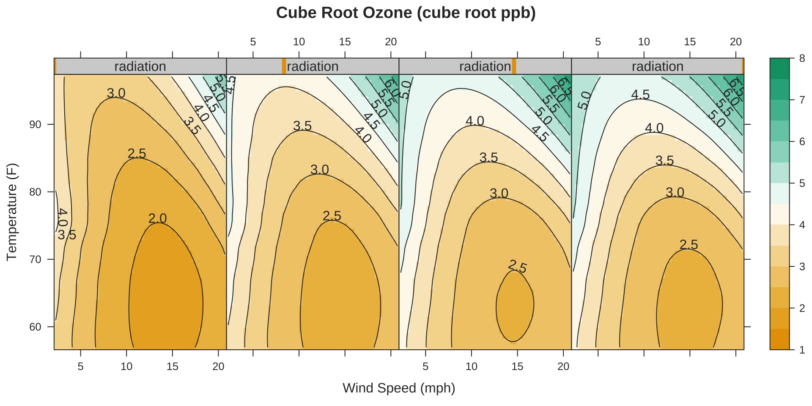
Base
Simlar to lattice, base R graphics doesn’t have a global distinction between a qualitative and sequential colourscales, it just has palette() (which is closest, semantically, to qualitative):
par(mfrow = c(1, 2)) hist(rnorm(100)) plot(rep(1:5, each = 5), rep(1:5, 5), col = 1:25, pch = 1:25, cex = 5)
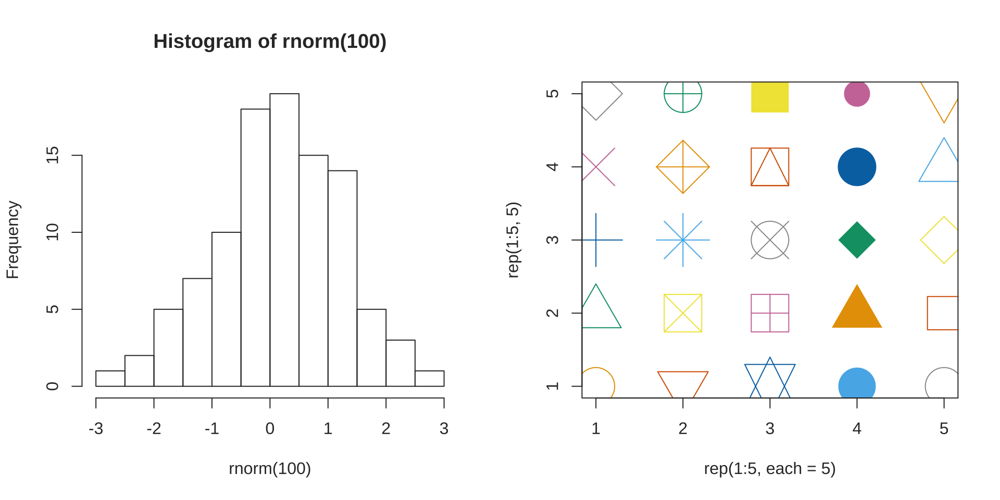
However, do know that you can supply the current sequential colourscale to individual plotting functions by doing something like col = thematic_get_option("sequential"):
par(mfrow = c(1, 2)) image(volcano) image(volcano, col = thematic_get_option("sequential"))
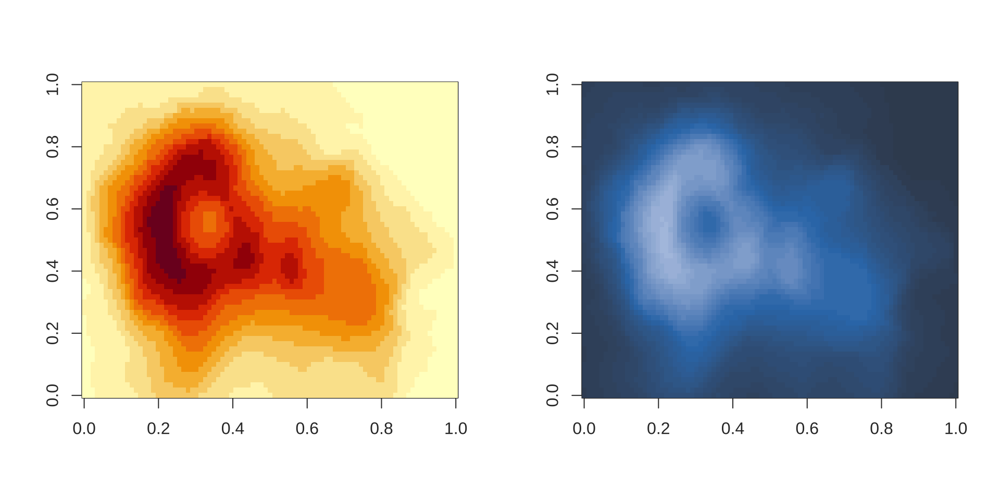
Thematic, in detail
At a minimum, thematic_on() wants a bg and fg color, but any of the other arguments may be explicitly (or implicitly) missing (i.e., set to NA), which will prevent thematic from setting any of the relevant defaults. For example, by leaving accent = NA, ggplot2 will continue to use it’s default accent color:
library(patchwork) preview_theme <- function() { smooth <- ggplot(mtcars, aes(wt, mpg)) + geom_point() + geom_smooth() contour <- ggplot(faithfuld, aes(waiting, eruptions, z = density)) + geom_raster(aes(fill = density)) + geom_contour() smooth + contour }
thematic_on(bg = "black", fg = "white") preview_theme()
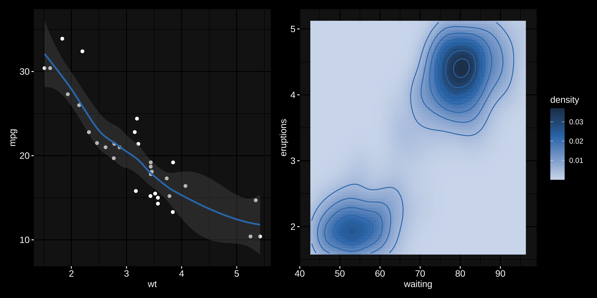
The default sequential colour gradient is based on a somewhat abitrary mixture of bg, fg, and accent (if all are defined). The amount (and direction) of which these colors are combined into a gradient can be controlled through sequential_gradient():
thematic_on(bg = "black", fg = "white", accent = "salmon") preview_theme() + ggtitle("Gradient: mix(fg, accent) -> accent -> mix(bg, accent)") thematic_on( bg = "black", fg = "white", accent = "salmon", # fg -> accent sequential = sequential_gradient(fg_weight = 1, bg_weight = 0) ) preview_theme() + ggtitle("Gradient: fg -> accent") thematic_on( bg = "black", fg = "white", accent = "salmon", # bg -> accent sequential = sequential_gradient(fg_weight = 0, bg_weight = 1, fg_low = FALSE) ) preview_theme() + ggtitle("Gradient: bg -> accent")
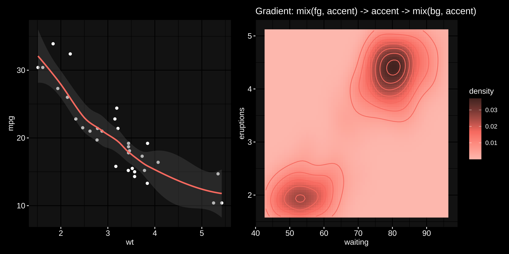 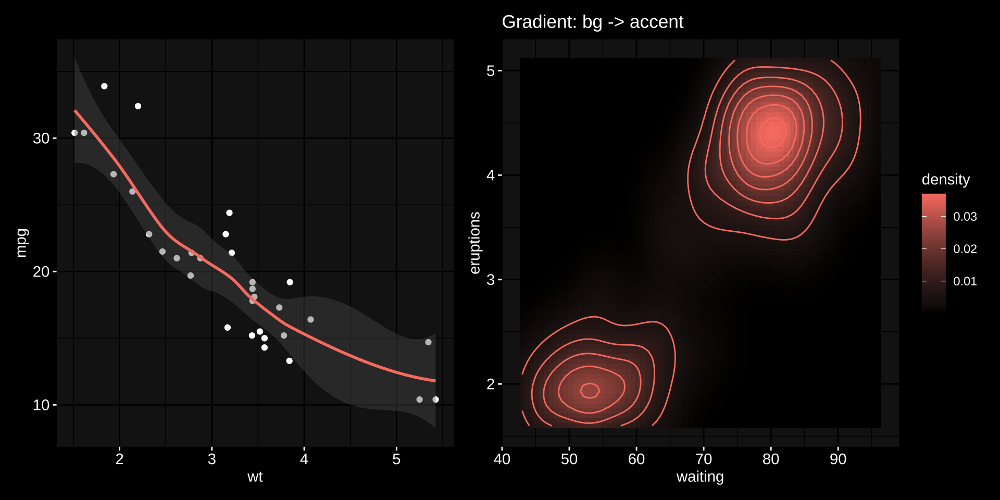
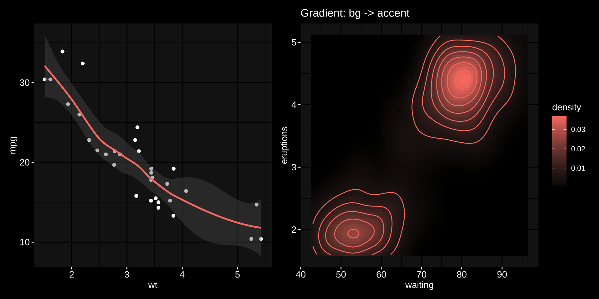
Keep in mind that you can set sequential = NA to avoid setting relevant defaults and also supply your own vector of color codes:
thematic_on(bg = "black", fg = "white", accent = "salmon", sequential = NA) preview_theme() + ggtitle("'Missing' sequential palette") thematic_on(bg = "black", fg = "white", accent = "salmon", sequential = RColorBrewer::brewer.pal(9, "Oranges")) preview_theme() + ggtitle("Custom sequential palette (colorbrewer's Oranges)")
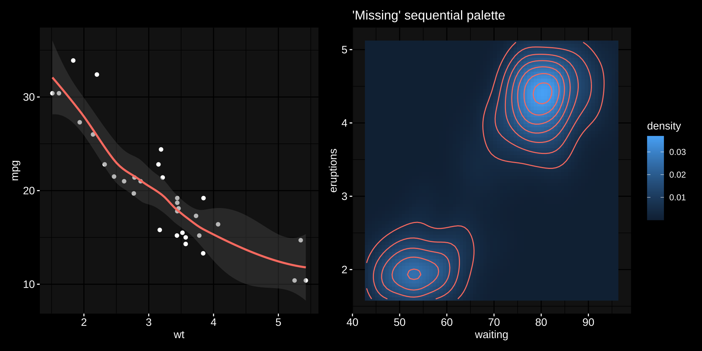
Similarly, for qualitative colour scaling, you can set to NA to prevent the Okabe-Ito based default or provide your own set of color codes:
thematic_on(bg = "black", fg = "white", qualitative = RColorBrewer::brewer.pal(8, "Dark2")) ggplot(economics_long) + geom_line(aes(date, value01, color = variable)) + ggtitle("Custom qualitative palette (colorbrewer's dark2)")